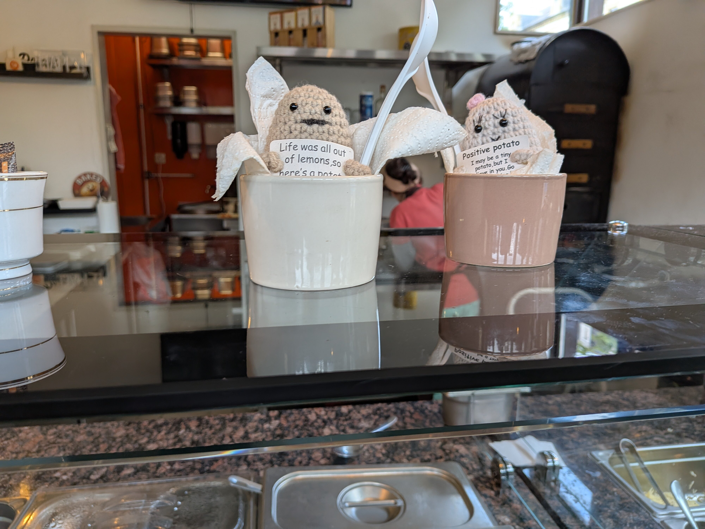

Les Positive Potatoes
Née comme food-truck, Kumpir a posé ses valises Place du Théâtre. On y sert la street-food préférée d'Istanbul avec un grand sourire — et les petites mascottes « Positive Potato » au crochet veillent sur le comptoir.
Première fois ? Le patron prend le temps d'expliquer chaque garniture et vous fait goûter avant de choisir. De la vraie comfort food turque, fraîche et joyeuse.
« Le meilleur déjeuner rapide de la ville — et tellement copieux ! »
Avis client · ≈4.8★« Le patron explique tout, on goûte, on adore. »
Avis client · ≈4.8★